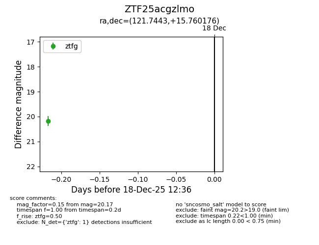
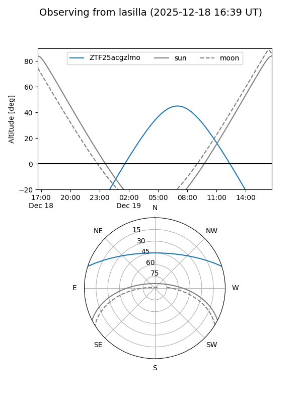
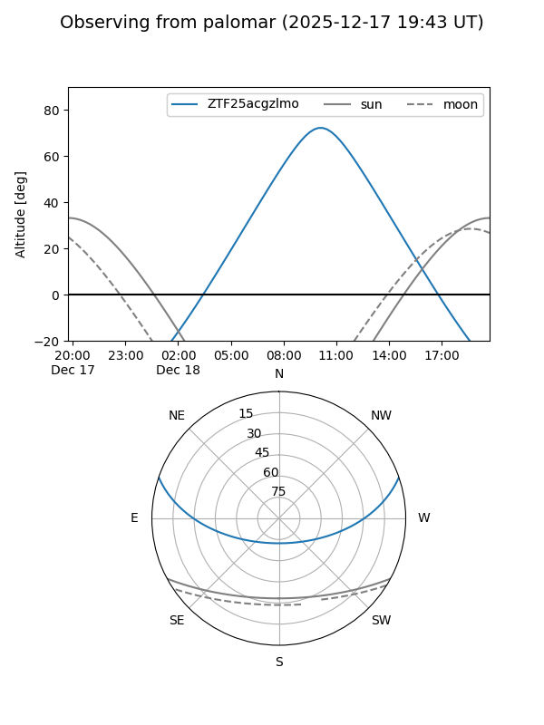

ZTF25acgzlmo
Target ZTF25acgzlmo at 2025-12-18 12:37
Aliases and brokers:
FINK: fink-portal.org/ZTF25acgzlmo
Lasair: lasair-ztf.lsst.ac.uk/objects/ZTF25acgzlmo
ALeRCE: alerce.online/object/ZTF25acgzlmo
alt names
ZTF25acgzlmo (ztf,fink_ztf)
Coordinates:
equatorial (ra, dec) = 121.7443,+15.76018
equatorial (HMS+DMS) = 08:06:58.64,+15:45:36.63
galactic (l, b) = (206.6841,+23.64580)
Photometry
last ztfg=20.17
1 ztfg detections
Lightcurve

Visibility


Additional plots